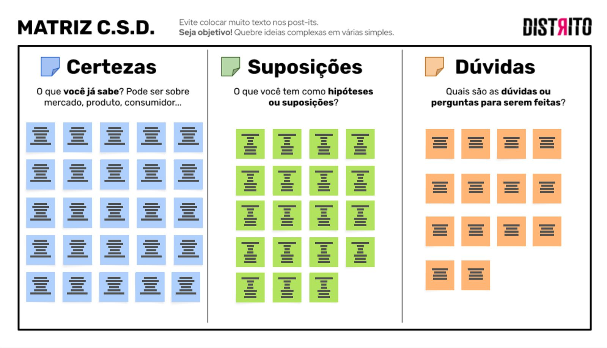
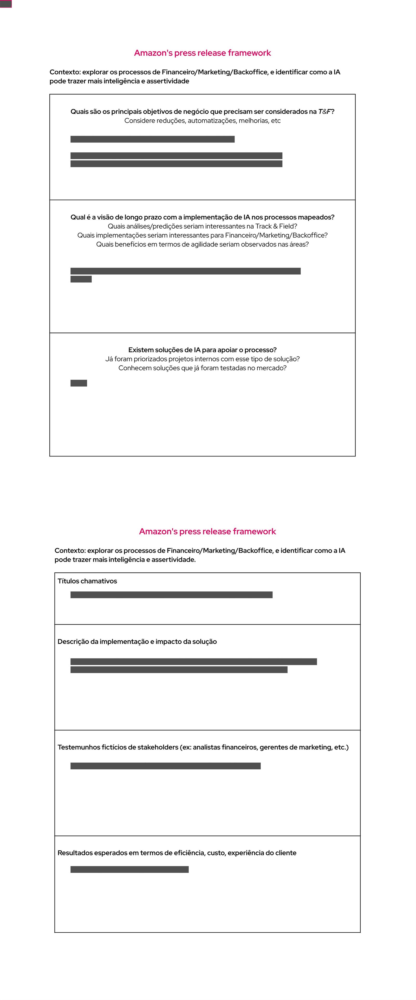
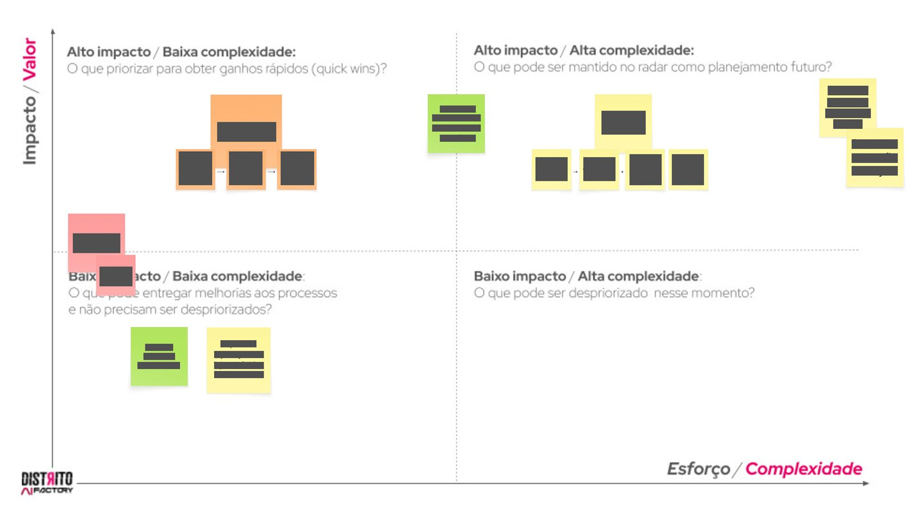

A Track&Field contratou o Distrito para uma implementação de IA. Não sabiam exatamente o que buscavam, só que queriam adotar inteligência artificial nos processos da empresa. Para definir os caminhos que seguiríamos, realizamos um workshop com o C-Level e diretores da marca utilizando diversos métodos de pesquisa.
Nossa maior dificuldade era planejar uma entrega que nem mesmo o cliente sabia o que queria. O método principal de pesquisa escolhido foi fazer um Focus Group com os nomes mais importantes de cada área da T&F.
Começamos fazendo uma Matriz CSD com post-its e caneta para entendermos as dores gerais dos stakeholders, depois realizamos o "Amazon's working backward method", um mecanismo de imaginar os produtos/soluções prontas e depois ir retrocedendo, materializando assim as ideias postas à mesa.
Quando essas ideias já estavam bem claras e definidas, as alocamos em um board para entendermos o impacto que esses projetos teriam em relação ao esforço de tirá-los do papel — terminando o workshop com um planejamento bem traçado, focado em produtos que de fato entregassem valor e mitigando da maneira mais eficiente os gastos (de dinheiro e tempo) envolvidos no projeto.



Os textos das imagens acima foram censurados por conterem informações sigilosas da empresa contratante.